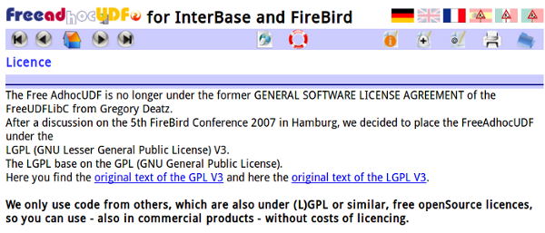
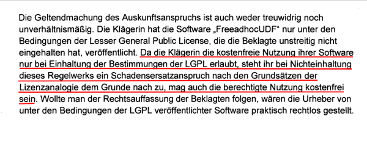

感謝您對「自由軟體鑄造場」的支持與愛護，十多年來「自由軟體鑄造場」受中央研究院支持，並在資訊科學研究所以及資訊科技創新研究中心執行，現已完成階段性的任務。 原網站預計持續維運至 2021年底，網站內容基本上不會再更動。本網站由 Denny Huang 備份封存。
也紀念我們永遠的朋友 李士傑先生（Shih-Chieh Ilya Li）。
也紀念我們永遠的朋友 李士傑先生（Shih-Chieh Ilya Li）。
LGPL-3.0 訴訟案例解析：FreeAdhocUDF 侵權和解案
建立日期 2013-05-28 04:48 最近更新在 2013-08-20 09:09
今年 (2013) 3 月 adhoc dataservice GmbH 與 Buhl Data Service GmbH 兩間德國公司在 Bochum 地方法院達成和解協議（註一），這是針對違反 LGPL-3.0（GNU Lesser General Public License version 3.0，註二）授權條款所達成的法庭和解，具有司法審判上既判力的效果，此一和解結果當事人不得再依司法手段爭執，從實務上來看，這樣的法庭和解也很有機會在未來相類的爭訟案件上，具有參考的地位。在當前自由開源軟體的侵權案例中，多是當事人自行談妥條件後進行庭外和解，經過法院訴訟程序而具有既判力的案例較少，因此本文將會介紹此案的內容，以供有興趣進一步了解自由開源軟體侵權案例的讀者參照之用。【背景事實】

▲ 圖1：FreeAdhocUDF 授權說明頁面，明示自 2007 年中開始改採 LGPL-3.0 授權。
在這個案件中被判定侵權利用的程式為 FreeAdhocUDF 函式庫，這是由網頁設計與網路服務公司 adhoc dataservice 所開發並且擁有著作權利的程式，自 2007 開始採用 LGPL-3.0 釋出程式源碼 (Source Code)。被告 Buhl Data Service 為一家以開發、販售商用財稅管理軟體為主的公司，在這間公司所開發與販售的 WISO Mein Büro 2009 軟體中，有利用到 FreeAdhocUDF 函式庫，其將 FreeAdhocUDF 結合至 WISO Mein Büro 2009 裡，成為測試程式的一部份，但 Buhl Data Service 在 WISO Mein Büro 2009 的販售與提供上，卻沒有保留 FreeAdhocUDF 的著作權聲明，也沒有提供 FreeAdhocUDF 的程式源碼與 LGPL-3.0 全文內容，因而違反了 LGPL-3.0 的相關義務規定（註三）。
adhoc dataservice 在 2009 年初就注意到了這一個侵權利用的現象，因此與 Buhl Data Service 接觸溝通後，雙方協議簽署了一份附帶有罰金的「侵權行為停止聲明 (starfbewehrte Unterlassungsverpflichtungserklärung)」。顧名思義，此份聲明之目的是要 Buhl Data Service 明確宣示，未來將不會再以違反 LGPL-3.0 的方式侵權利用 FreeAdhocUDF，若沒有遵守此一協議，後續 Buhl Data Service 若再收到由 adhoc dataservice 所寄發的侵權通知，其除了必須要立即停止對 FreeAdhocUDF 函式庫的相關利用外，同時還必須支付 adhoc dataservice 一定額度的契約罰金。
在 Buhl Data Service 簽署這份聲明後，adhoc dataservice 對其產品進行了多次的測試購買，用來持續追蹤 WISO Mein Büro 2009 軟體後續的利用狀態，是否已經符合 LGPL-3.0 相關的授權條件，但是這些產品的測試結果卻顯示 Buhl Data Service 並未真正落實了任何的改善措施，WISO Mein Büro 2009 依然繼續以違反 LGPL-3.0 的方式被販售，因此 adhoc dataservice 公司轉而向德國 Bochum 地方法院，向 Buhl Data Service 提出軟體著作侵權的相關控訴（註四）。
【爭執要點與法院判決結果】
針對此項訴訟 Bochum 法院於 2011 年 1 月底做出了中間判決（註五），認定原告 adhoc dataservice 之 FreeAdhocUDF 著作權利受到侵害，被告 Buhl Data Service 因此必須提供侵權產品的相關資訊，以方便原告計算損害賠償金額。基於此一諭示，被告提供了原告侵權產品相關的資訊後，雙方後續也展開損害賠償金額與相關和解條件的協商程序，二年後，雙方於 2013 年 3 月初在 Bochum 法院正式達和一致的和解協議，被告支付原告 15,000 歐元的損害賠償金額，這起違反 LGPL-3.0 的侵權糾紛在此條件下進行落幕（註六）。
以下為訴訟過程中雙方爭執的重點以及法院判決的結果與理由。
1、即使程式被當作測試軟體來利用，LGPL-3.0 的義務規定仍然必須被遵守。
在訴訟過程中，雙方首先爭執的重點在於，當 LGPL-3.0 函式庫被結合到測試軟體中進行散布時，就運作架構而言，其不具有執行軟體本身功能的定位，此時散布者是否可以據此而不遵守 LGPL-3.0 的義務。關於這點，Bochum 法院認為被告還是必須要遵守 LGPL-3.0，因為重點在於 FreeAdhocUDF 確實被結合到 WISO Mein Büro 2009 中，成為了 WISO Mein Büro 2009 整體程式的一部份，至於 FreeAdhocUDF 僅具有測試功用、而不執行軟體功能的事實，對於判斷是否必須遵守 LGPL-3.0 的授權義務並不相關。根據此點，法院肯定了原告所擁有的 FreeAdhocUDF 著作權受到被告的侵害。
2、被告必須提供侵權產品的相關販售資訊給被告，作為原告評估損害賠償的基礎。
在肯定原告著作權受到侵害的前提下，雙方進一步針對被告是否應該提供侵權產品相關商業資訊加以爭執。這項爭執的基礎是德國著作權法第 101 條所規定的「資訊請求權」，相關內容大意是說，當著作權法所保護的相關權利受到侵害，且此侵害規模亦達到相當的商業程度後，權利受侵害的一方便可以要求侵權人提供侵權事件相關的商業販售資訊，以作為原告評估損害賠償的基礎（註七）。Bochum 法院對於這一部份認同原告觀點，認為被告必須提供相關資訊給予原告，即使原告是透過 LGPL-3.0 這份不收取著作與專利授權金的條款來散布 FreeAdhocUDF，也無礙於原告依照德國著作權法來請求相當金額的損害賠償。因此 Bochum 法院最後判決被告必須將下列資訊提供給予原告：
(1) 被告自何時開始利用 FreeAdhocUDF？
(2) 被告在哪些產品中利用到 FreeAdhocUDF？
(3) 有多少 (2) 的產品已經被販售出去？
(4) 被告透過 (2) 的產品所獲得的營業額與收益為多少？
3、法官認為依被告 2009 年初簽署的停止聲明，其並未再次以違反 LGPL-3.0 的方式利用 FreeAdhocUDF。
由於被告曾經於 2009 年初簽署過「侵權行為停止聲明」，因此原告主張，依據這份聲明被告有義務要召回侵權產品 WISO Mein Büro 2009，但是卻未召回，因此被告必須實踐停止聲明的內容，召回侵權產品，並支付原告罰金。不過法院在此並不贊同原告見解，其認為此份停止聲明是規範被告「未來再次」侵權利用 FreeAdhocUDF 的處理程序以及應該支付多少罰金，但依 Buhl Data Service 對 WISO Mein Büro 2009 的實際販售資訊來看，其在後續散布的版本裡並沒有繼續嵌入 FreeAdhocUDF 函式庫作為測試程式之用，故該項停止聲明的協議已然成立，但此案裡並未發生效力。然而，原告依然可以根據著作權法的相關規定，來主張過往 WISO Mein Büro 2009 版本的侵權利用狀態必須被去除，所以原告仍有機會透過著作權法的基本規定，來向被告提出權利損害賠償及召回侵權產品的要求。
【LGPL-3.0 的有效性與可執行性受到肯定】

▲ 圖2：Bochum 法院在判決書中明確肯定，透過 LGPL-3.0 無償授權他人利用函式庫，無礙著作權人向侵權人主張損害賠償。
由於這是第一起與 LGPL-3.0 直接相關的訴訟案，因此這起訴訟案值得期待的焦點之一，就是 LGPL-3.0 這份授權條款的內容將會如何在訴訟的過程中被加以討論。但是從判決內容看來，不僅當事人沒有針對 LGPL-3.0 的內容提出任何相關的爭執點，Bochum 法院也沒有對 LGPL-3.0 條款有任何的評論，整個訴訟案是在直接承認 LGPL-3.0 為一份有效授權契約的前提下來進行。
早期發生在德國的 GPL-2.0 侵權訴訟案，德國法院多少會針對 GPL-2.0 是否為有效的著作權授權契約、著作權利人是否可以據此提起著作權侵權主張等疑點來發表論述，例如 2005 年德國軟體工程師 Harald Welte 針對荷蘭 Sitecom 公司向慕尼黑地方法院聲請假處分，慕尼黑地院在裁定理由書中，就針對 GPL-2.0 在德國著作權法上的特性加以論述與肯定；而在 2006 年，同樣由 Harald Welte 為原告，控告台灣友訊德國子公司 D-Link 的侵權訴訟案中，法蘭克福地方法院也針對 GPL-2.0 在德國著作權法上的適用加以說明，也同時肯定前述 2005 年慕尼黑地方法院的論點。不過這樣的情況到了 2011 年有所轉變：在 2011 年 AMV 公司控告 Cybits 公司一案（註八），以及本文所介紹的 FreeAdhocUDF 案件中，德國法院與訴訟當事人均沒有針對 GPL-2.0 與 LGPL-3.0 是否為一份有效的著作權契約加以爭論。因此可以觀察到，在德國司法實務上，已經開始傾向於直接承認 GPL 類條款是一份有效的著作權授權契約，程式權利人因此可以根據 GPL 類授權條款來直接主張其著作權，這代表著 GPL 類授權條款在德國司法實務上的有效性基礎日漸穩固。
此外，自由開源軟體通常以「無償授權／免授權金 (royalty-free)」的方式來散布，一旦軟體遭到侵權利用的時候，權利人雖然可以要求侵權人支付損害賠償金額，但是法律所預設的損害賠償機制是以回復原狀為原則，也就是權利人可以請求的損害賠償幅度，一般限於實際所遭受到的損害以及所失去的合理預期利益，而由於自由開源軟體的散布原則是在不收取授權金的基礎下進行，因此有時難以有一個明確計算損害賠償的基礎，來讓權利人據以合理主張。但是在 FreeAdhocUDF 一案中，Bochum 法院在判決理由中明確地表示，即使原告透過 LGPL-3.0 以無償的方式提供他人利用程式，但亦得以其行使權利依通常情形可得預期之利益來計算所受損害，故並不妨礙原告依照德國著作權法的規定來向侵權人要求損害賠償（註九），此一類推機制在我國著作權法第 88 條亦有所載，所以此案中雖然判決書中並沒有進一步說明詳細的損害賠償計算方式，但是判決理由中明示強調原告所具有的這項權能，就是賦與原告一個強而有力的基礎，可以來跟被告進一步協商出合宜的損害賠償金額。而也就是在這樣的基礎之上，經歷了二年的協商後，原告 adhoc dataservice 與被告 Buhl Data Service 針對和解金額終於達成一致的協議。
比較可惜的是，此案所公布的和解協議內容僅限於和解金額 15,000 歐元，至於雙方是如何計算與協調出這個數額，則不得而知，尤其 FreeAdhocUDF 函式庫並非全部由原告 adhoc dataservice GmbH 獨力開發完成，其中有利用到第三方自由開源軟體程式碼，這些第三方程式碼又是如何影響損害賠償金額的計算，在沒有相關資訊充份揭露的情況下，仍無從一窺究竟（註十）。
【結語】
雖然 FreeAdocUDF 侵權和解案的協商過程保密，當事人雙方如何協商出最終的和解金額，無法一窺全貌，但是這中間透過 Bochum 法院的判決，不僅讓 LGPL-3.0 的有效性受到肯定，判決理由書明文強調自由開源軟體的無償授權／免授權金不影響權利人主張損害賠償的權利地位，全案最終並公布和解金額，進而宣示了自由開源軟體授權條款的可執行性，因此這一訴訟案強化了自由開源軟體的法律基礎，未來將可以為自由開源軟體的合法利用帶來更正面、積極的效應。也期待本文的介紹，可以讓感興趣的讀者，對於自由開源軟體的侵權案例更多一分的認識。
------
註一：adhoc dataservice GmbH 公司網站：https://www.adhoc-data.de/；Buhl Data Service GmbH 公司網站：https://www.buhl.de/。
註二：關於 LGPL-3.0 的內容介紹，請參閱：林誠夏，更為彈性中庸的 LGPL-3.0，https://www.openfoundry.org/tw/legal-column-list/1166--lgpl3。
註三：FreeAdhocUDF 首頁：https://freeadhocudf.org/index_eng.html；授權資訊頁面：https://freeadhocudf.org/licence_eng.html。WISO Mein Büro系列軟體：https://www.buhl.de/produkte/alle/wiso-mein-buero-2013/product.html。
註四：本訴訟原告乃是根據德國民事訴訟法第 254 條提起「階次訴訟 (Stufenklage)」(Zivilprozessordnung § 254 Stufenklage)。簡單來說，德國的階次訴訟是指，針對同一個案件，原告分階段提起正式的訴訟，通常第一次的訴訟是在於請求被告提供相關資訊，法院會在訴訟過程審理原告是否具有請求權，以及被告是否真的必須提供相關資訊，判決之後，原告根據被告所提供的這些資訊來計算出損害賠償的金額，接下來原告才為了請求損害賠償而提起後續的訴訟。當事人對單一的階次訴訟判決不服的話，可以提起上訴。因此，在本文的訴訟案中，原告提起的第一次訴訟，目的就是請求 Bochum 地方法院判決被告必須提供侵權產品相關的資訊，包括從何時開始利用 FreeAdhocUDF、利用的狀況與相關的營業額及收入多少等商業販售的細節資訊，有了這些資訊，原告可以方便地計算出在接下來的訴訟或和解協商程序中，可以請求的合理損害賠償金額是多少。
註五：判決書德文原文副本下載點：https://www.dr-bahr.com/download/zdf-wiso-mein-buro-urheberrechtswidrig.pdf。網路直接閱讀版本：https://www.telemedicus.info/urteile/Urheberrecht/Open-Source/1148-LG-Bochum-Az-I-8-O-29309-Ansprueche-bei-Verletzung-der-LGPL.html。此一判決在德文意涵為「部份判決 (Teilurteil)」，在訴訟上的定位相當於我國民事訴訟法第 383 條第 1 項規定之「中間判決」，代表法院對於原告之攻擊方法，認為已達可為裁判之程度者，所以透過中間判決來穩定見解，並讓後續的訴訟程序在此見解下進行評判。當事人對此中間判決見解不服的話，仍可以依程序提出上訴。相關法條請參見德國民事訴訟法第 301 條 (Zivilprozessordnung § 301 Teilurteil)。
註六：中文新聞：德國 Bochum 地方法院肯定 LGPL 有效性－涉訴雙方法庭和解並明示公布和解金額，https://www.openfoundry.org/tw/foss-news/8947--bochum-lgpl-。英文新聞：https://www.h-online.com/open/news/item/German-court-case-confirms-validity-of-the-LGPL-1822882.html。原告律師的德文新聞稿：https://www.dr-bahr.com/news/vergleich-zdf-software-entwickler-muss-15000-euro-an-open-source-programmierer-zahlen.html。
註七：這項規定在德國著作權法第 101 條 ，其德文原文可參見下面網頁：https://www.gesetze-im-internet.de/urhg/__101.html，英文翻譯內容則請參見下面網頁：https://www.gesetze-im-internet.de/englisch_urhg/englisch_urhg.html#p0614。
註八：2004 年 Harald Welte 針對 Sitecom 聲請假處分，相關介紹請見：https://www.openfoundry.org/tw/case-study/1282-2004welte-vs-sitecom。2006 年 Harald Welte 控告台灣友訊在德國子公司 D-Link 一案，相關介紹請見下列文章：葛冬梅，全球第一個 GPL 完整法院訴訟案例剖析，https://www.openfoundry.org/tw/legal-column-list/504--gpl-；https://www.openfoundry.org/tw/case-study/1280-2006welte-vs-d-link。 AMV 公司控告 Cybits 公司一案相關新聞報導請見：嵌入式裝置事涉侵權 – GPL 再次成為全球焦點，https://www.openfoundry.org/tw/foss-news/8379--gpl-。
註九：德國著作權法第 97 條第 2 項後段規定了所謂的「類推授權 (Lizenzanalogie/License Analogy)」計算方式，這種計算損害賠償的方式，是假設侵權人在取得合法授權的前提下，會願意支付多少的合理授權金給權利人，而來計算出侵權人應該給予權利人多少的損害賠償金額。德國著作權法第 97 條德文原文可參見下面網頁：https://www.gesetze-im-internet.de/urhg/__97.html，英文翻譯內容則請參見下面網頁：https://www.gesetze-im-internet.de/englisch_urhg/englisch_urhg.html#p0598；我國就此規定的相關法制，可參照著作權法第 88 條第 2 項第 1 款：「依民法第二百十六條之規定請求。但被害人不能證明其損害時，得以 其行使權利依通常情形可得預期之利益，減除被侵害後行使同一權利 所得利益之差額，為其所受損害。」
註十：在 FreeAdhocUDF 的授權說明網頁上，羅列著被利用到 FreeAdhocUDF 中的第三方自由開源軟體程式碼：https://freeadhocudf.org/licence_eng.html。
您也許有興趣閱讀以下文章:
- 更為彈性中庸的 LGPL-3.0 - 2007-08-26
自由軟體鑄造場電子報 : 第 219 期 LGPL-3.0 訴訟案例解析：FreeAdhocUDF 侵權和解案
標籤: LGPL-3.0, 訴訟, 侵權, 德國, Bochum, license analogy, Lizenzanalogie, FreeAdhocUDF, 和解, 損害賠償,
分類: 法律專欄
專欄總覽


自由軟體鑄造場 製作 最佳瀏覽狀態：IE7或Firefox2.0以上 (建議使用Firefox) ‧ 解析度1024*768
E-Mail：contact@openfoundry.org Address：台北市南港區研究院路2段128號 中央研究院資訊科學研究所 . 隱私權條款. 使用條款
E-Mail：contact@openfoundry.org Address：台北市南港區研究院路2段128號 中央研究院資訊科學研究所 . 隱私權條款. 使用條款